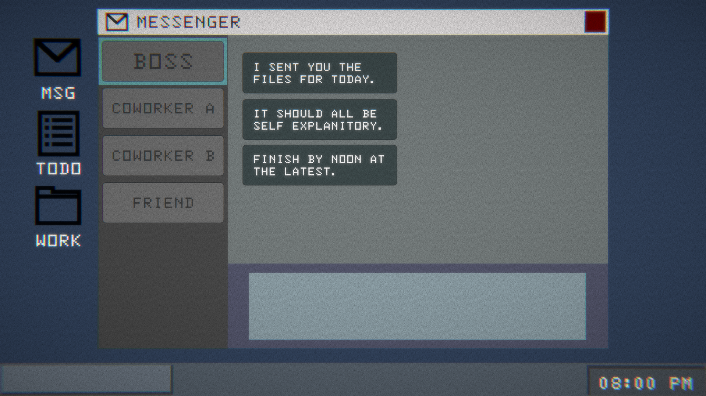

In this prototype, my main goal was to try to get feedback on the UI/mock desktop interface as well as more feedback on the minigame concepts. The guiding question of this prototype and playtest was: “How do I present this section so that it feels dreary and tedious, but is still engaging?” I wanted players to feel enough pressure and frustration for it to be meaningful and significant to their overall experience while still keeping them playing. When juxtaposed with the second section, the narrative heavy fantasy world, I wanted the office sim to feel tedious and grey, but something that was considered a necessary evil that could come to be accepted alongside breaks into the fantasy world.
The base desktop is shown above. I took inspiration from a few different, mostly older, desktop formats by browsing through this site that archives desktop design. I leaned older for the sake of maintaining a simple, corporate look. Here are some of the images I saved to use as reference.

This interface seemed pretty intuitive to the players. They immediately knew to click on the icons to access the next steps. Something I noticed was that players would move from top to bottom, opening first the messages, then the to-do list, and finally the folder, which makes sense according to laws of visual hierarchy and worked perfectly for the narrative I was trying to build within this prototype.
The base desktop is shown above. I took inspiration from a few different, mostly older, desktop formats by browsing through this site that archives desktop design. I leaned older for the sake of maintaining a simple, corporate look. Here are some of the images I saved to use as reference.
This interface seemed pretty intuitive to the players. They immediately knew to click on the icons to access the next steps. Something I noticed was that players would move from top to bottom, opening first the messages, then the to-do list, and finally the folder, which makes sense according to laws of visual hierarchy and worked perfectly for the narrative I was trying to build within this prototype.

Above is the messenger app that opens when the MSG icon is clicked. By clicking through the buttons on the left sidebar, players are able to read through different conversations. Again here, people tended to move from top to bottom, starting with the boss and ending with the friend, which is what I had intended. Many players also tried to type within the textboxes, one even commented that they assumed the bulk of the gameplay would take place in this messaging interface. I think it could be a neat detail to add in and something that could be utilized to add to the message, something like only having one response option when talking to your boss and co-workers but many when talking to your friend, or having frustrated and sharp options to choose to respond to the boss with but having the actual message sent be a polite response that is completely different. Later on I also intend for the friend shown here to be the gateway into the escapist game world that forms the second half of the game, so having them here allows for the introduction to happen in a way that makes sense narratively.
When initially making the to-do list, I wondered if it was maybe unnecessary. However during the playtest I think many people found it helpful to give them a baseline understanding of what they were meant to do. Some people commented that they would like even more instructions, or some kind of tutorial, so it might be helpful to convert this into a more detailed instruction sheet to help people when they got stuck on the minigames. It would also be cool if in a later build these tasks could check themselves off as they got completed.
The final icon led to this task folder, which I wanted to include to section off parts of the game, but also build a bit of a hierarchy system that I feel is very characteristic of PCs. Again, players tended to move left to right. A bug I noticed though, is that the way the windows were layered in the UI affected how they would layer on screen, making it so that if players didn’t close previous windows, the new ones they opened might be covered by the older ones. So perhaps I could potentially add code to edit the layering as stuff is opened, so that whatever is opened is always the highest layer.
The first icon in the folder opened up to a “sales report” that the player was meant to type through. I had used this typing system in the past, and knew that it wasn’t ideal in some ways, but figured it could work for a prototype as a representation of a more polished system. In the past, though clunky, players have figured out that they needed to type. However, this time, none of the players realized that typing was needed. I’m hoping that as this system gets cleaned up and a blinking cursor added, players will realize that they need to type. Unfortunately I didn’t get much info on how this fits within the game as an actual minigame, but hopefully in further iterations I will be able to see whether this serves the intent of this section.
The next two icons were meant to go somewhat hand in hand. I didn’t want each icon to be an isolated app, as in reality things don’t really work like that and things tend to not be that straightforward. So because of this, I tied these two parts together by adding a number needed for the spreadsheet in the data document. In a later iteration I intended for this to be more buried among other files, and for the player to really have to dig and sift through documents to find answers for the spreadsheet. However, even with just one file, people were confused and didn’t get it. I wonder if more instructions would be needed, perhaps in the to do list, or if it’s just not intuitive enough.
The spreadsheet was a math game, with the players needing to average out the numbers. Most players seemed to get that aspect of it. Most players used a calculator, and some even suggested adding a calculator to the desktop UI. The struggle ended up being with the formatting. It took them a really long time to realize that the inputted numbers had to be formatted as the rest of the numbers were. There were some bugs with the red coloring to indicate incorrectness that also made things a bit more confusing in that regard. I wonder if adding more instructions in the to do list would be enough to clarify that, or if it’s just too complicated for players to get.
With the feedback I got from this playtest, I feel content with how the UI came out, and am planning to move forward with developing this style of interface. However, the minigames still need to be edited and experimented with to achieve that balance between tedious and engaging. I did not completely answer the question posed at the beginning(“How do I present this section so that it feels dreary and tedious, but is still engaging?”), but I think I have gotten closer to figuring it out by setting on the general structure and aesthetic. What’s left to do is to focus on the specifics of the player interactions and aforementioned minigames. For now I think I have a good general overview of this section, so I intend to start developing the prototype for the other system, the fantasy world one, to bring it up to the level of development within the dreary work system.
Photos from Playtest: